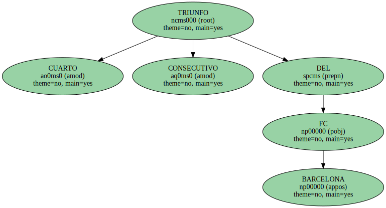
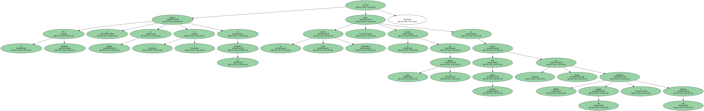
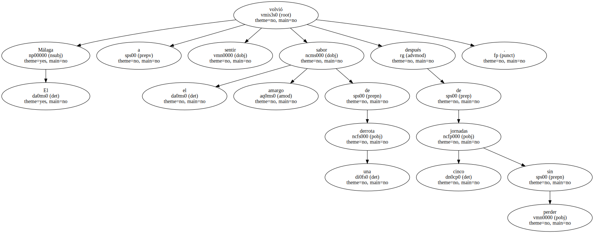

CUARTO TRIUNFO CONSECUTIVO DEL FC.
El FC Barcelona se impuso al Málaga ( 1-2 ) en La Rosaleda y logró su cuarta victoria consecutiva y la novena en toda su historia en terreno del equipo andaluz , donde también ha cosechado seis empates y seis derrotas.
Patrick Kluivert convirtió el polémico penalti que dio el triunfo al equipo azulgrana y ya suma diez dianas en lo que va de Liga.

El Málaga volvió a sentir el sabor amargo de una derrota después de cinco jornadas sin perder.
